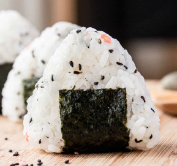

Onigiri

Simple recipe for simple nights. Eyeballing measurements encouraged.
Ingredients
- Rice (Asian kind preferred)
- Rice vinegar
- Canned tuna or salmon
- Mayo
- Nori
- Optional- toasted sesame seeds
Steps
- In a bowl, mix rice 1 cup of rice and 1 tablespoon rice vinegar together.
- In a separate bowl, mix canned tuna (or salmon) with 2 tablespoons of mayo.
- Use your hands to form a ball with the rice, then make an indent in the middle using your finger.
- Add a spoonful of tuna/mayo mix into the indent, then bring together rice from the side to form a ball.
- Wrap ball with nori sheet.